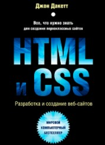

2) HTML и CSS. Разработка и дизайн веб-сайтов. Джон Дакетт

Удобное руководство по работе с HTML и CSS. На страницах есть масса визуальных примеров с фрагментами реального кода. Такой подход позволяет быстро вникнуть в принципы верстки и разметки страницы. Книга написана по принципу: «как построить сайт с нуля». Книга будет полезна к прочтению начинающим вебмастерам и дизайнерам.
Следующая литература